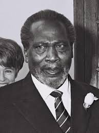
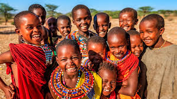
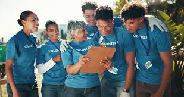

Founder
Kenya One Leadership
MISSION STATEMENT
Kenya One exists to uplift vulnerable children and families by creating access to education, mentorship, and life-changing opportunities. We work hand in hand with communities to build resilience, restore dignity, and empower individuals to achieve their full potential. Through compassion-driven programs and partnerships, we aim to create lasting transformation rooted in hope, faith, and practical support.
Kenya One is a Kenya-based nonprofit organisation committed to supporting vulnerable children, youth, and families through structured mentorship, feeding programs, and educational support. We believe every child deserves dignity, opportunity, and a chance to succeed.
Founded in 2022 by passionate community advocates, Kenya One was established to respond to growing needs in underserved communities. Our focus is to provide hope, stability, and long-term empowerment through consistent engagement and care.
A Kenya where every child and family has equal access to opportunity, dignity, and hope for a better future.

Kenya One Leadership
Kenya One began with a simple but powerful vision: to serve children and families living in hardship with dignity and consistency. What started as small acts of kindness has grown into a structured outreach movement impacting communities across Nairobi and beyond.
Through mentorship, feeding programs, and partnerships, Kenya One continues to build a generation of confident, empowered, and hopeful young people.
"Every act of compassion brings us closer to a stronger and more united Kenya, where communities stand together in love, dignity and hope."
We focus on practical, sustainable programs that create real impact.
Providing meals to vulnerable children and families in informal settlements and rural communities.
Guiding young people through structured mentorship that builds confidence and purpose.
Helping children stay in school through school fees, materials, and emotional support.
Reaching underserved communities with hope, care, and practical assistance.
Families Supported
Children Mentored
Counties Reached
Scholarships Provided
FROM KENYA ONE
Real stories from our work in education support, mentorship, and community empowerment across Kenya.

Kenya One is supporting children from vulnerable families by helping with school fees, learning materials, and academic follow-ups to ensure they stay in school and complete their education.

Our mentorship sessions focus on helping students build discipline, self-esteem, career awareness, and personal responsibility as they grow in both school and life.
Kenya One works directly with schools to encourage students through talks, guidance sessions, and motivation programs that improve performance and mindset.
In Mumias, we engage families by encouraging education, supporting school-going children, and connecting parents with resources that improve learning outcomes.
Kenya One reaches out to youth who have dropped out of school, guiding them back into education pathways, skills training, or mentorship programs.
Through partnerships and local support systems, Kenya One is expanding access to education opportunities and helping children build stable academic foundations.
Kenya One is currently supporting learners from vulnerable communities by helping them stay in school, access basic learning needs, and receive consistent mentorship that keeps them focused on their education journey.
Many students we work with face challenges such as lack of school fees, unstable home environments, and limited access to learning materials. Your support helps bridge that gap.
Support a LearnerReach out to us for partnerships, school support, mentorship programs, or community collaboration.